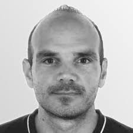

About
We are organizing the Workshop on human centric cybersecurity to use the knowledge and experience of the experts in the field and strengthen our knowledge on human-centric research.
We invited experts in the field to …
Confirmed Speakers
Simon Parkin, TU Delft
Title: TBA
About
We are organizing the Workshop on human centric cybersecurity to use the knowledge and experience of the experts in the field and strengthen our knowledge on human-centric research.
We invited experts in the field to …
Confirmed Speakers
Simon Parkin, TU Delft
Title: TBA
Abstract: TBA
Bio: TBA
Gabriele Lenzini, University of Luxembourg
Title: TBA
Abstract: TBA
Bio: TBA

Paolo Masci,Research Scientist and Principal AssociateFrom NASA Langley Research Center
Title: TBA
Abstract: TBA
Bio: TBA
Schedule
TBA
Place
Milos, MDU, Västerås (also available online: Teams link)
Organizers:
Marjan Sirjani
Kristina Lundqvist
Cristina Seceleanu
Zahra Moezkarimi
Contact Info
Marjan Sirjani
Email: marjan.sirjani@mdu.se
Room: U1-066C